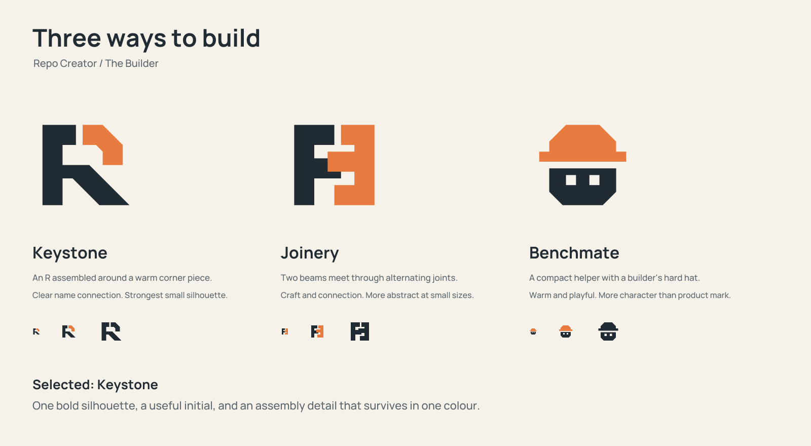
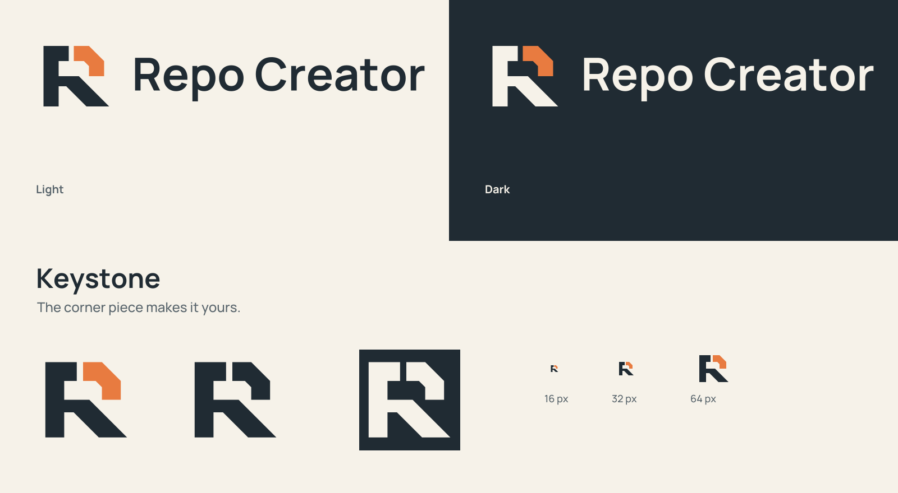
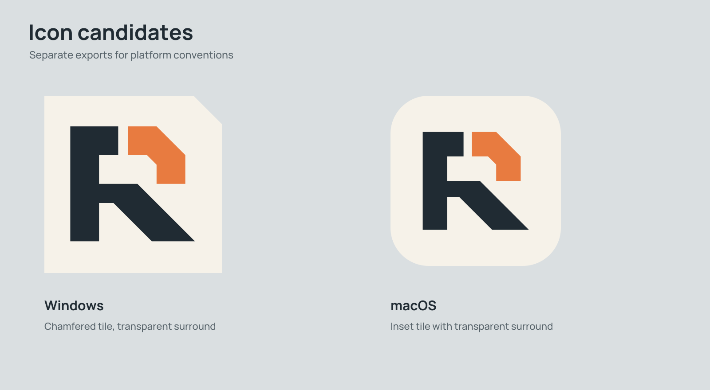
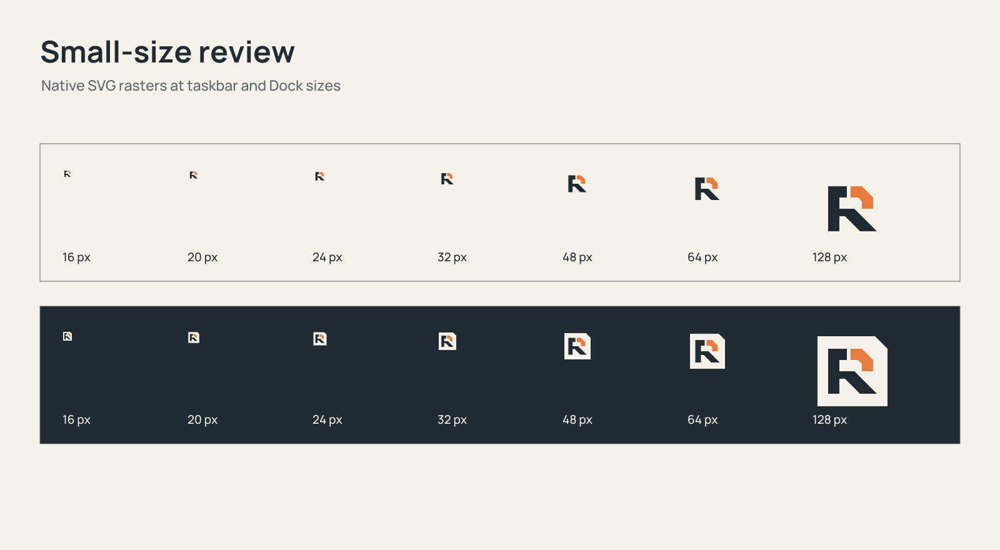
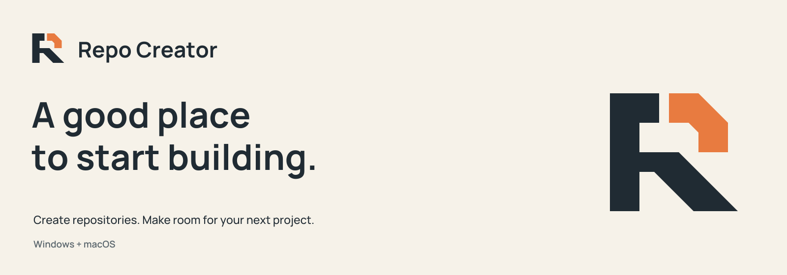

An assembled initial with a warm corner piece. Keystone connects the product's name to the
act of building, while its simple geometry stays readable in a taskbar.
Three interpretations

Keystone is recommended for its direct name connection, recognisable silhouette and useful
one-colour form.
Keystone identity

Application icon candidates

Replacement candidates remain separate from the shipping application. Platform integration
and physical taskbar/Dock review follow approval.

GitHub artwork

README hero, 1600 x 560. No README change is included.